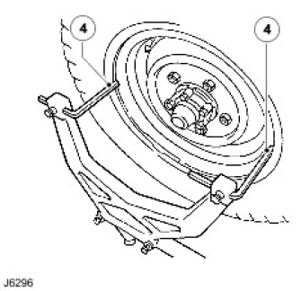
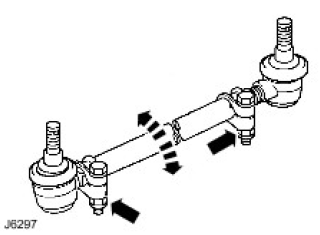

| Type | Coil springs controlled by telescopic dampers front and rear. | |
|---|---|---|
| Front | Transverse location of axle by Panhard rod, and fore and aft location by two radius arms. stabilizer bar fitted as standard on 90 models with 265/75 tyres, 110 Japanese and 130 models. | |
| Rear | Fore and aft movement inhibited by two tubular trailing links. Lateral location of axle by a centrally positioned 'A' frame, upperlink assembly, bolted at the apex to a ball joint mounting. Stabilizer bar fitted as standard on 90 models with 265/75, 110 models with self levelling unit, 110 Japanese, and 130 models. | |
| Part number | Colour code | |
|---|---|---|
| Front - Driver's side | NRC 9446 | Blue/green |
| Front - Passenger side | NRC 9447 | Blue/yellow |
| Rear - Driver's side | NRC 9448 | Blue/red |
| Rear Passenger side | NRC 9449 | Yellow/white |
| Part number | Colour code | |
|---|---|---|
| Front - Driver's side | Blue/green | |
| Front - Passenger side | NRC 9446 | Blue/yellow |
| Rear - Driver's side | NRC 9447 | Green/yellow/red |
| Rear - Passenger side | NRC 9463 | Green/yellow/white |
| Part number | Colour code | |
|---|---|---|
| Front - Both sides | NRC 8045 | Yellow/yellow |
| Rear - Both sides | NRC 6904 | Red/green |
| Part number | Colour code | |
|---|---|---|
| Front - Both sides | NRC 8045 | Yellow/yellow |
| Rear - Both sides | NRC 7000 | Green/white |
| Part number | Colour code | |
|---|---|---|
| Front - Both sides | NRC 8045 | Yellow/yellow |
| Rear - Both sides | NRC 6904 | Red/green |
| Rear helper springs - Both sides | RRC 3266 | No colour code |
| Part number | Colour code | |
|---|---|---|
| Front - Driver's side | NRC 9448 | Blue/red |
| Front - Passenger side | NRC 9449 | Yellow/white |
| Rear - Driver's side | NRC 6389 | Red/red |
| Rear - Passenger side | NRC 6904 | Red/green |
| Front/rear helper springs - Both sides | RRC 3266 | No colour code |
| Part number | Colour code | |
|---|---|---|
| Front - Driver's side | NRC 9448 | Blue/red |
| Front - Passenger side | NRC 9449 | Yellow/white |
| Rear - Both sides | NRC6904 | Red/green |
| Rear helper springs - Both sides | RRC 3266 | No colour code |
| Part number | Colour code | |
|---|---|---|
| Front - Driver's side | NRC 9448 | Blue/red |
| Front - Passenger side | NRC 9449 | Yellow/white |
| Rear - Driver's side | NRC 6389 | Red/red |
| Rear - Passenger side | NRC 6904 | Red/green |
| Front/rear helper springs - Both sides | RRC3266 | No colour code |
| Type | Telescopic, double-acting non adjustable. |
|---|---|
| Bore diameter | 35.47mm |
| Nm | |
|---|---|
| Strap nyloc nuts | 30 |
| Ball link self lock nuts | 68 |
| Castellated nut | 40 |
| Nm | |
|---|---|
| Drag link to axle | 40 |
| Securing ring for mounting turret | 14 |
| Radius arm to chassis | 176 |
| Panhard rod mounting arm to chassis | 88 |
| Panhard rod to axle | 88 |
| Panhard rod to mounting bracket | 88 |
| Radius arm to axle | 197 |
| Nm | |
|---|---|
| Top link to mounting bracket | 176 |
| Bottom link to axle | 176 |
| Bottom link to chassis | 176 |
| Top link bracket to rear cross member - Hardness indicator 8.8 on head of bolt | 47 |
| Top link bracket to rear cross member - Hardness indicator 10.9 on head of bolt | 70 |
| Shock absorber to axle | 37 |

